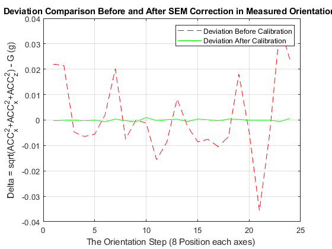

Contents
3-AXIS ACCELEROMETER CALIBRATION SCRIPT:
% 1) DATA PREPROCESSING: Measurements from a 3-axis accelerometer are collected and averaged across various static orientations, resulting in the dataset 'accelerationData.' % 2) OPTIMIZATION: The 'fminunc' optimization algorithm is employed to estimate the parameters of the Sensor Error Model (SEM), which accounts for errors in the accelerometer's measurements. % 3) EVALUATION: The accelerometer readings in 'accelerationData' are corrected using the estimated SEM parameters, and the Root Mean Squared Error (RMSE) is calculated to assess calibration effectiveness.
1) DATA PREPROC
close all; clear all; fprintf('accelerometer calibration \n'); load('acceleration_data.mat'); % Data for calibration consists of multiple sets of measurements. Each set, denoted as accelerationData(1:3, i), % represents the averaged readings % obtained from 1000 static samples recorded at a sampling rate of 100 Hz. These measurements are expressed in units of gravity (g). gravityMagnitude = 1; % Magnitude of the gravity field vector (~9.81 m/s^2) numSamples = length(accelerationData); % Number of samples in accelerationData initialGuess = [0, 0, 0, 1, 1, 1, 0, 0, 0]; % initial guess or initial values for the parameters of the Sensor Error Model % ALFAxy, ALFAzx, ALFAzy: These three values represent the misalignment angles between the accelerometer axes and the ideal orthogonal (perfectly aligned) axes. They are typically expressed in radians and describe how the accelerometer axes are oriented relative to the desired reference axes. %Sx, Sy, Sz: These three values represent the scale factors for each axis of the accelerometer. Scale factors account for any systematic scaling errors in the accelerometer measurements. These values are dimensionless and should be close to 1 for a well-calibrated accelerometer. %bx, by, bz: These three values represent the bias or offset values for each axis of the accelerometer. Bias values account for any constant offsets or drift in the accelerometer readings. They are typically expressed in the same units as the accelerometer measurements (e.g., in g).
accelerometer calibration
2) OPTIMIZATION
[xOptimized, f_val, exit_flag, output, grade] = fminunc(@(x)optimizeAccelerometer(x, numSamples, accelerationData, gravityMagnitude), initialGuess); % fminunc for optimisation fprintf('ACC SEM (Sensor-Error-Model) is : \n'); % Sensor Error Model SEM: scaleFactor Matrix | orthogonalization Matrix % | baisOffsets scaleFactorMatrix = [xOptimized(4), 0, 0; 0, xOptimized(5), 0; 0, 0, xOptimized(6)] % Scale Factor Matrix biasOffsets = [xOptimized(7); xOptimized(8); xOptimized(9)] % Offsets orthogonalizationMatrix = [1, 0, 0; xOptimized(1), 1, 0; xOptimized(2), xOptimized(3), 1] % Orthogonalization matrix
Local minimum possible.
fminunc stopped because the size of the current step is less than
the value of the step size tolerance.
ACC SEM (Sensor-Error-Model) is :
scaleFactorMatrix =
1.0064 0 0
0 0.9969 0
0 0 0.9937
biasOffsets =
0.0009
-0.0052
0.0136
orthogonalizationMatrix =
1.0000 0 0
-0.0156 1.0000 0
0.0531 0.0034 1.0000
3) EVALUATION
[CorrectedAcceleration] = ApplyCorrection(accelerationData, numSamples, orthogonalizationMatrix, scaleFactorMatrix, biasOffsets); % Correction of accelerations using SEM estimated using fminunc function % (measured_data, number of samples, T, S, b) [RMSEBeforeCalibration, deviationBeforeCalibration] = calculateRMSE(accelerationData, numSamples, gravityMagnitude); % Computation of RMSE before calibration [RMSEAfterCalibration, deviationAfterCalibration] = calculateRMSE(CorrectedAcceleration, numSamples, gravityMagnitude); % Computation of RMSE after calibration fprintf('The RMSE Before Calibration Process: %.6f g \n', RMSEBeforeCalibration); fprintf('The RMSE After Calibration Process: %.6f g \n', RMSEAfterCalibration); figure; plot(deviationBeforeCalibration, 'r--'); hold on; grid on; plot(deviationAfterCalibration, 'gr'); title('Deviation Comparison Before and After SEM Correction in Measured Orientations'); xlabel('The Orientation Step (8 Position each axes) '); ylabel('Delta = sqrt(ACC_x^2+ACC_x^2+ACC_z^2) - G (g)'); legend('Deviation Before Calibration','Deviation After Calibration');
The RMSE Before Calibration Process: 0.015470 g The RMSE After Calibration Process: 0.000426 g